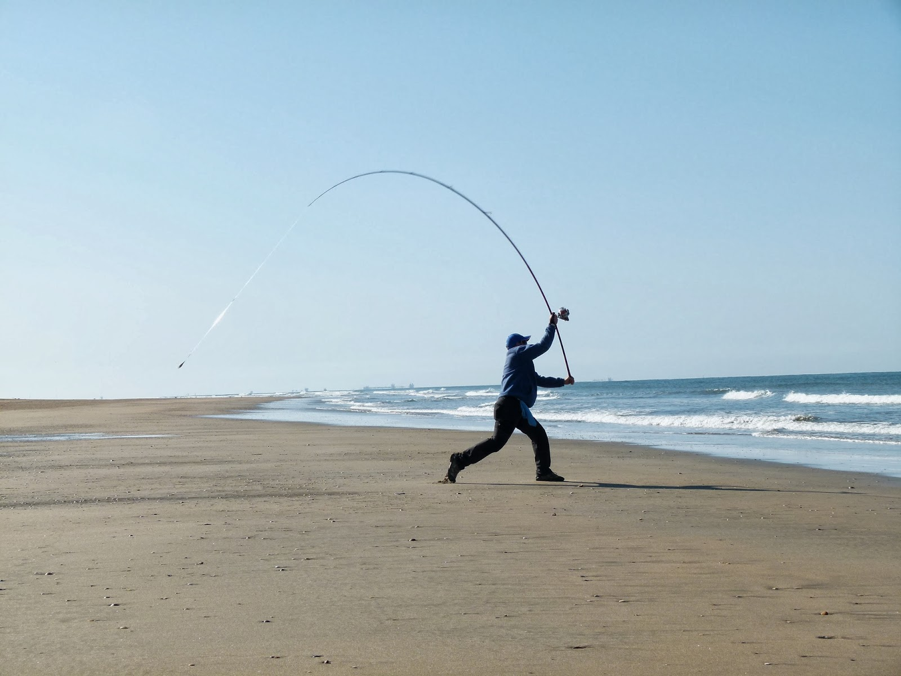
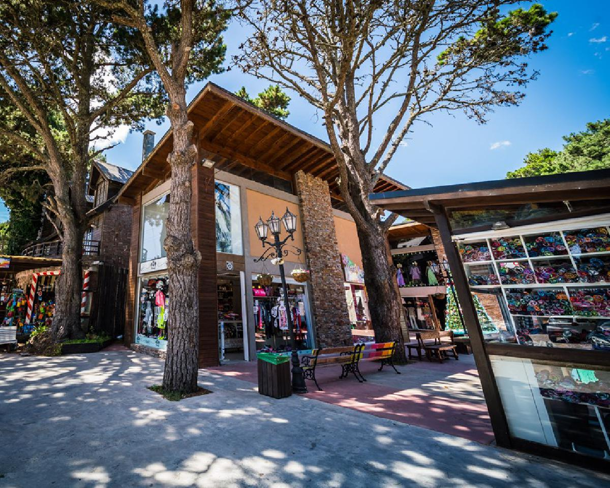
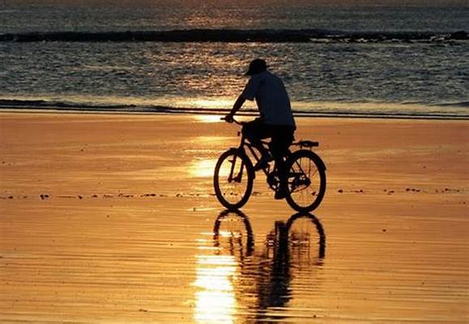
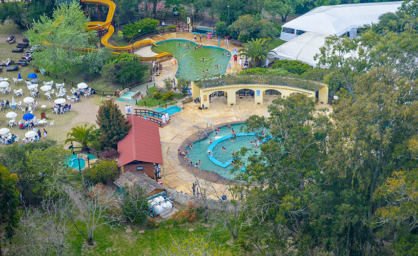
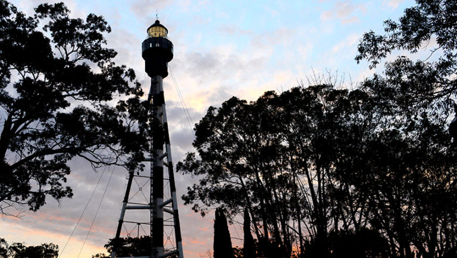
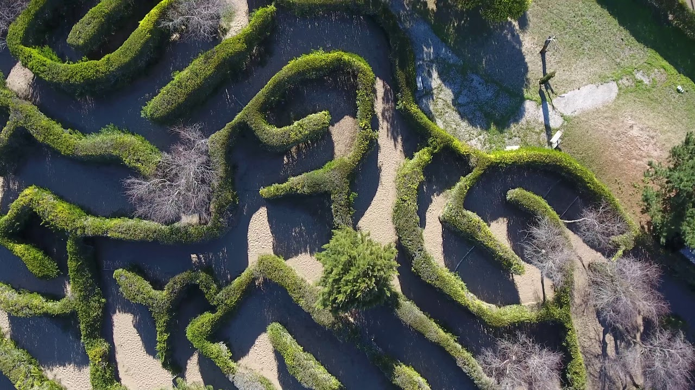
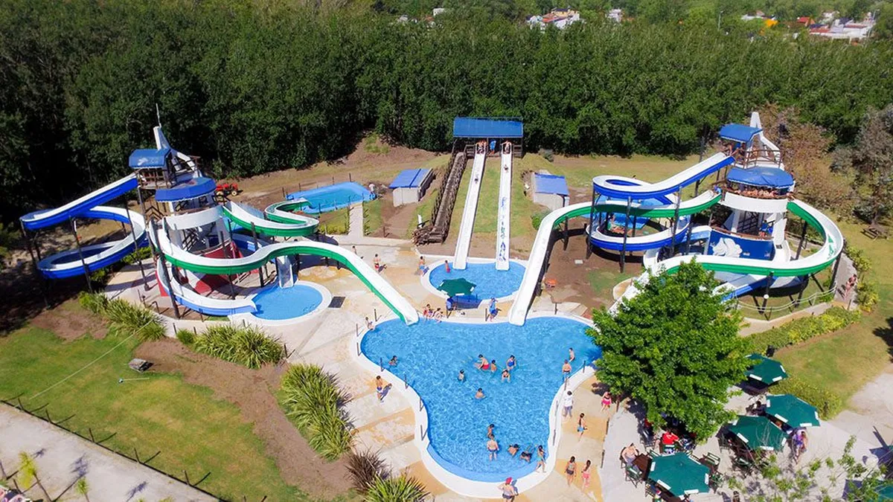
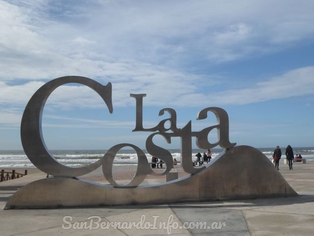

Cruzando la calle
Cruzando la callePlayas
Arena suave y aguas refrescantes: el entorno perfecto para relajarte y tomar sol.
Inicio/Costa del Este
Qué hacerUna localidad costera tranquila, rodeada de bosques, a unos 360 km de Buenos Aires. Ideal para unas vacaciones distintas.

En Costa del Este la preservación del medio ambiente es prioridad: bosques y áreas verdes con senderos para caminar y andar en bici.
Además vas a encontrar restaurantes, cafeterías y tiendas locales con productos y artesanías únicas. Relajarte en la playa, pescar, ir de compras o disfrutar de la gastronomía: hay planes para todos los gustos.
Cruzando la calleArena suave y aguas refrescantes: el entorno perfecto para relajarte y tomar sol.
NaturalezaSenderos ideales para caminar y descubrir la flora y fauna local.

Costa o embarcaciónOportunidades para los amantes de la pesca, desde la costa o en embarcaciones.
 A 200 m
A 200 mDe delicias locales a platos de distintas culturas, para todos los paladares.

A 200 mTiendas, paseos y artesanías a una caminata del complejo.

DeporteRecorré los senderos en bici disfrutando del paisaje natural.
San Clemente, Las Toninas, Santa Teresita, Mar del Tuyú, San Bernardo, Mar de Ajó, Pinamar, Cariló y Villa Gesell: todo a tiro de auto.
 San Clemente · ~40 km
San Clemente · ~40 kmEspectáculos de delfines, lobos marinos y orcas, acuarios y mucho para aprender sobre la vida marina.

San Clemente · ~40 kmUna jornada dedicada al descanso y al bienestar para recargar energías.

San Clemente · ~40 kmSubí a la cima y disfrutá de una vista panorámica del océano y la bahía.

Las ToninasUno de los laberintos más grandes de Sudamérica: 6.400 m² entre vegetación, a metros del mar.

Santa TeresitaParque acuático con toboganes y piletas para toda la familia.

Partido de La Costa y másEntretenimiento, tiendas, restaurantes y actividades recreativas en toda la costa.
Volvé de cada paseo a tu departamento con balcón, a metros de la playa.